打开软件方式和地址
地址：teambutler.vifim.com
用户使用手册
需要php7.0+和mysql5.7+环境支持,系统windows与linux均可.
之后需要配置apache或者nginx或者iis等服务器(选1,推荐前两者),
将其默认文档(默认运行文件)指向www文件夹下的index.php
然后进行数据库表格的导入,可在db文件夹下找到sql格式进行导入
其余可按常规网站进行配置(如域名等)
通过游览器访问即可
首先是登录界面可进行用户登录
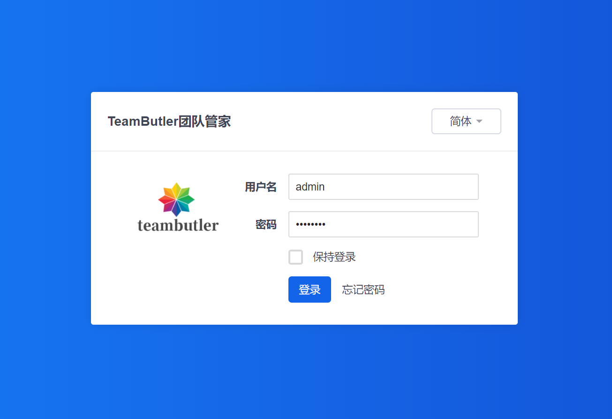
忘记密码:
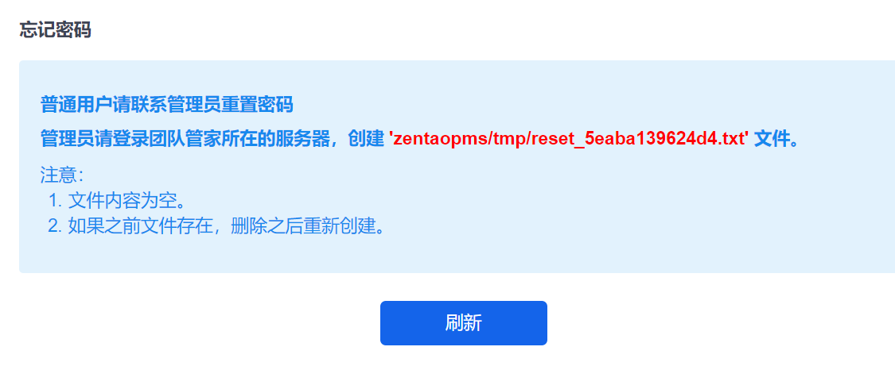
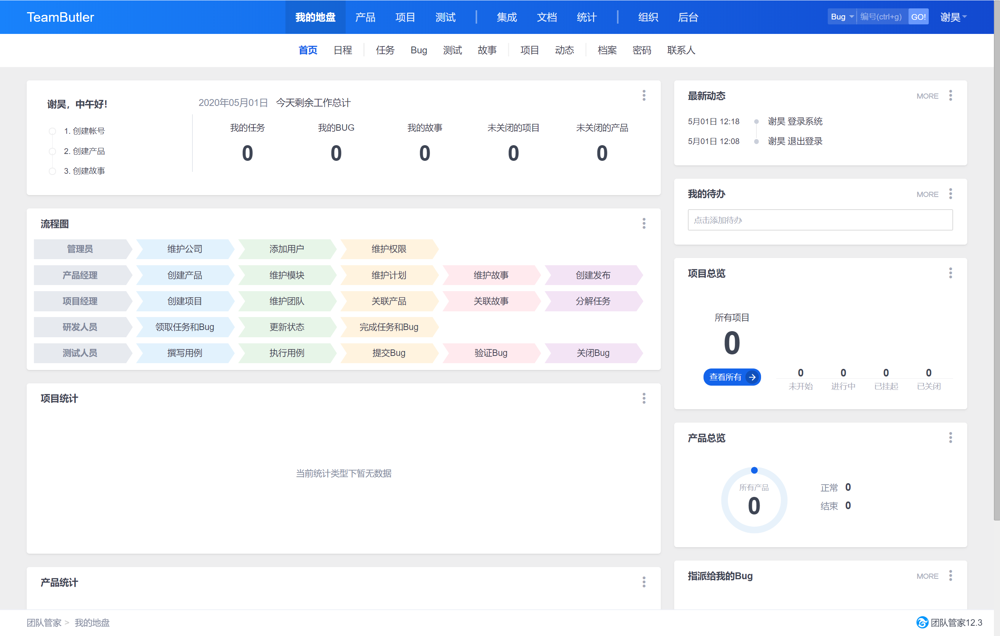
我的地盘主要用于方便快速地查看当前项目情况等,比如日程,任务等
主要用于产品线流程的主体管理:
比如可以自行点击添加产品进行添加:
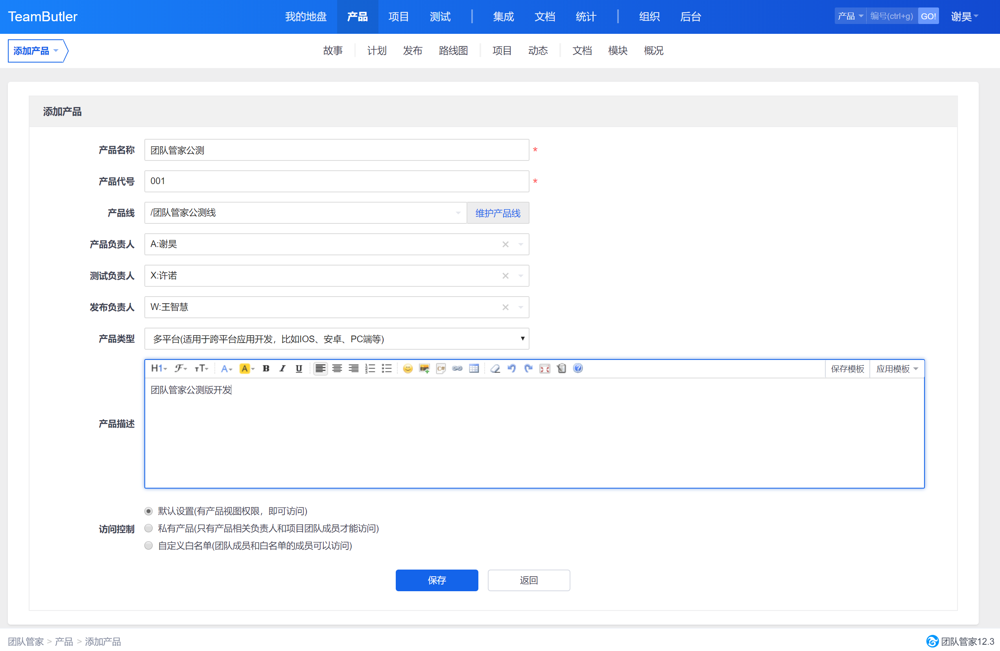
添加产品后可对产品周期内进行一系列管理,比如故事的设置,计划,路线等等:
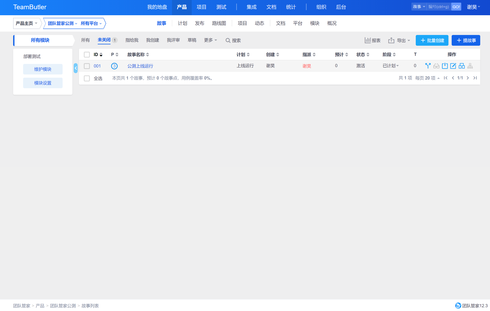
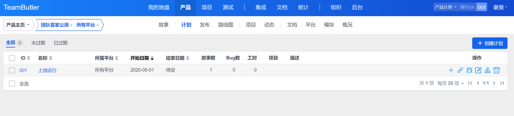
项目模块可自行添加项目:
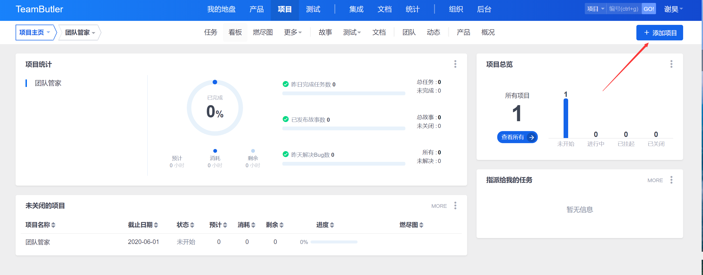
之后可对项目的任务,故事,团队,测试等等进行管理
测试部分可以设置bug,用例等,与产品或项目绑定,方便对产品项目进行开发
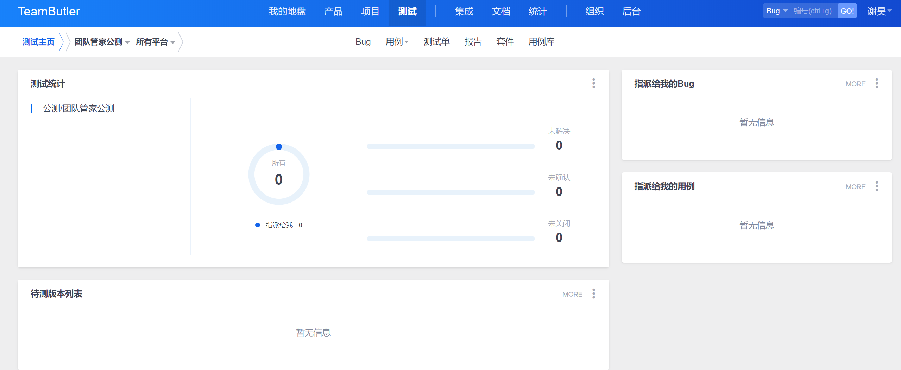
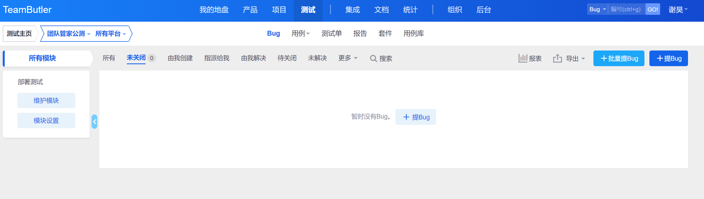
集成部分可以进行代码的管理,比如集中的版本库,方便开发者对团队代码进行上传,下载,整合等管理
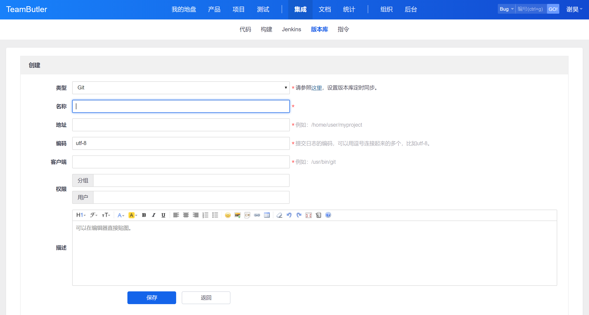
在文档部分可以对项目文档进行分类整合等集中管理
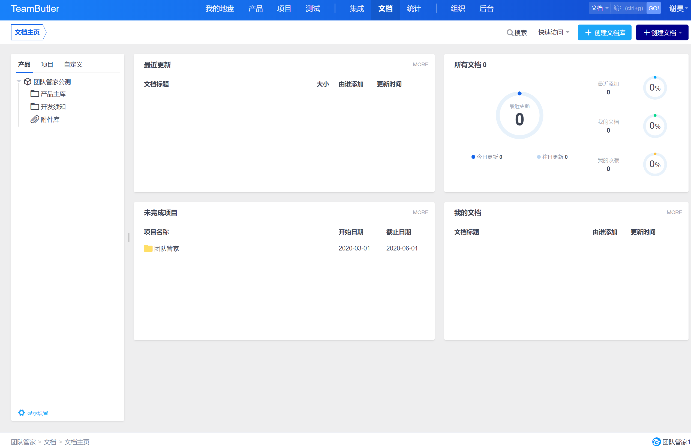
统计部分可以对当前产品报表进行查看,方便了解大体信息
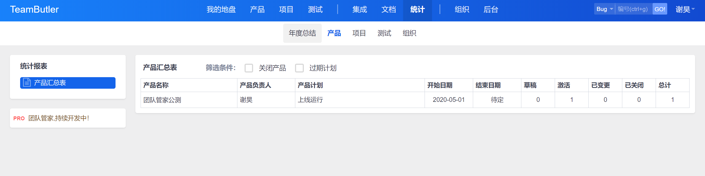
组织部分可以对公司或者团队里面进行多种设置,比如部门,用户与权限等,并且可以在动态看到历史变动记录
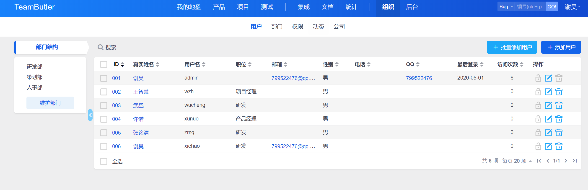
后台部分可以对系统进行管理,比如设置通知方式,二次开发等等
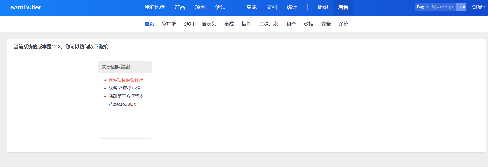
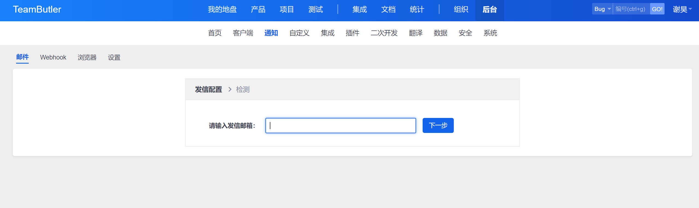
反馈方式
将Bug提交到邮箱，以截图和文字描述的形式发送至：1105170236@qq.com